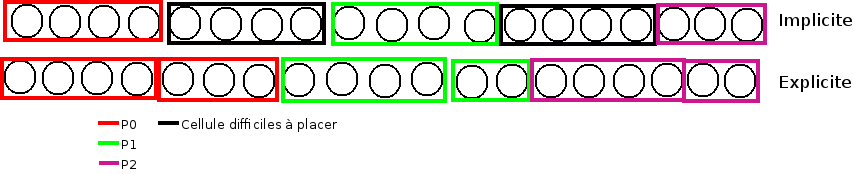

Usage implicit de MPI dans ScalFmm
Table des matières
1 Implémentation mpi implicite très naïve
Cette première version avait pour principal but de découvrir et à prendre en main les fonctions de StarPU MPI. Les premières étant starpu_mpi_init et starpu_mpi_shutdown. Mais rapidement ont suivies les fonctions pour tagger les handles de StarPU et les ajouter à des nœuds MPI. À cela c'est ajouté la transformation de tous les appels à starpu_insert_task ou starpu_task_submit par starpu_mpi_insert_task.
Par soucis de simplicité chaque nœud MPI possède l'intégralité de l'arbre, même si ce n'est pas une solution viable sur le long terme. Pour vérifier que tout fonctionnait correctement, je me suis amusé à mapper toutes les données sur un premier nœud MPI et toutes les tâches sur un second. J'ai ensuite pu valider que l'arbre du premier nœud avait les bons résultats et que le second nœud n'avait que des erreurs.
2 Implémentation moins naïve
Dans l'idée de créer une version 0 un brin potable qui puisse faire du calcul avec plus de deux nœuds MPI, j'ai créé une fonction de mapping des données. Elle consistait à partager chaque niveau entre tous les processus de la manière la plus équitable possible.

Figure 1 : Division de chaque niveau entre chaque processus. Groupe de l'arbre de taille 4.
3 Reproduction du mapping mpi explicite
Pour pouvoir effectuer des comparaisons il était nécessaire de reproduire le même mapping de tâches la version MPI explicite. Dans le cas de la version implicite telle qu'elle est actuellement implémentée, le mapping des données infère le mapping de tâches. La façon la plus simple de procéder est de faire en sorte que les particules se retrouvent sur les mêmes nœuds MPI.
3.1 Premier problème des groupes
La disposition des particules sur les nœuds MPI étant décidé par un tri distribué, il était plus judicieux de sauvegarder le mapping des particules dans un fichier puis de le charger (dans la version implicite) et d'utiliser ce mapping pour influer le mapping au niveau de la version implicite. Le soucis du tri distribué est qu'il essaye d'équilibrer les particules sur les nœuds sans tenir compte des groupes de l'arbre groupé (group tree).

Figure 2 : Problème issuent de la constitution des groupes.
Or le mapping des données est fait avec la granularité des groupes de l'arbre groupé.
Une première solution serait de modifier un peu l'algorithme de l'arbre pour le forcer à faire des groupes un peu plus petit de telle sorte qu'ils correspondent aux groupes de la version MPI explicite. Soucis, quand il faudra remonter dans l'arbre, que faire des cellules qui sont présentes sur plusieurs nœuds MPI, que faire de la racine ?
3.2 Solution retenue
Plutôt que d'essayer de reproduire un mapping de données identique à celui de la version explicite quel que soit les particules, nous avons choisi de limiter le nombre de cas reproductibles et de ségmenter ce mapping par niveau. Ainsi avec un arbre parfait où chaque indice de morton possède le même nombre de particules, il est possible de reproduire le même mapping de données sur un certain de nombre de niveaux. Ce nombre varie en fonction de la taille des groupes de l'arbre groupé.

Figure 3 : Méthode pour générer une particule à un indice de Morton donné.
3.3 Validation des résultats
Pour valider ces résultats, j'ai réutilisé le système de nom de tâches fait pour simgrid. Ainsi j'ai pu indiquer, dans un fichier des informations à propos de chaque tâche. Les indices de Morton ainsi que les nœuds MPI sur lesquels elles s'exécutent.
3.3.1 Observation
Si l'on fait exception des niveaux où l'on sait que des erreurs de tâches se trouveront, on a :
- Plus de tâches dans la version explicite car elle a des tâches (P2P, M2L) symetriques.
- Toutes les tâches issuent de l'algorithme implicite se retrouvent dans l'ensemble des tâches explicite.
- Toutes les tâches sont au moins mapper sur le même nœud MPI. Les tâches symetriques étant parfois mappé sur deux nœuds différents.
4 Et après ?
- Comparaison des performances
- Répartition des GFlop
- Répartition du temps de calcul
- Mémoire utilisée par nœud
- Étude d'autres mapping
- Limiter l'empreinte mémoire
- Ne pas allouer les cellules numériques si ce n'est pas necessaire (up et down)
- Ne pas allouer les cellules symboliques si ce n'est pas necessaire
- Distribuer l'arbre